|
|
|
|
| En estas breves notas, desarrolladas por Juan-Antonio Infante y José María Rey, profesores del Departamento de Análisis Matemático y Matemática Aplicada de la Universidad Complutense de Madrid, se pretende dar un primer paso en el aprendizaje del uso de MATLAB. En lo que sigue, se supone que el usuario teclea lo que aparece en color rojo (de hecho, lo óptimo sería que el aprendiz de MATLAB reprodujera éstos y parecidos ejemplos por sí mismo) y precedido del símbolo >>, que hace el papel del prompt de la máquina. En color negro aparecerá la respuesta de MATLAB a la instrucción tecleada. Los comentarios aparecerán en color verde. |
Antes de comenzar,
hagamos algunas consideraciones generales:
|
| A grandes rasgos, los temas aquí introducidos son: |
| Los cálculos que no se
asignan a una variable en concreto se asignan a la
variable de respuesta por defecto que es ans (del
inglés, answer):
>> 2+3 ans =
Sin embargo, si el cálculo se asigna a una variable, el resultado queda guardado en ella: >> x=2+3 x =
|
| Para conocer el valor de una
variable, basta teclear su nombre:
>> x x =
Si se añade un punto y coma (;) al final de la instrucción, la máquina no muestra la respuesta... >> y=5*4; ... pero no por ello deja de realizarse el cálculo. >> y y =
|
| Las operaciones se evalúan
por orden de prioridad: primero las potencias, después
las multiplicaciones y divisiones y, finalmente, las
sumas y restas. Las operaciones de igual prioridad se
evalúan de izquierda a derecha:
>> 2/4*3 ans =
>> 2/(4*3) ans =
|
| Se pueden utilizar las
funciones matemáticas habituales. Así, por ejemplo, la
función coseno,
>> cos(pi) % pi es una variable con valor predeterminado 3.14159... ans =
o la función exponencial >> exp(1) % Función exponencial evaluada en 1, es decir, el número e ans =
|
| Además de la variable pi , MATLAB tiene otras variables
con valor predeterminado; éste se pierde si se les
asigna otro valor distinto. Por ejemplo:
>> eps % Épsilon de la máquina. Obsérvese que MATLAB trabaja en doble precisión ans =
pero... >> eps=7 eps =
|
| Otro ejemplo de función
matemática: la raíz cuadrada; como puede verse, trabajar
con complejos no da ningún tipo de problema. La unidad
imaginaria se representa en MATLAB
como i
o j, variables con dicho valor como
predeterminado:
>> sqrt(-4) ans = |
| El usuario puede controlar
el número de decimales con que aparece en pantalla el
valor de las variables, sin olvidar que ello no está
relacionado con la precisión con la que se hacen los
cálculos, sino con el aspecto con que éstos se
muestran:
>> 1/3 ans =
>> format long >> 1/3 ans =
>> format % Vuelve al formato estándar que es el de 4 cifras decimales
|
| Para conocer las variables
que se han usado hasta el momento:
>> who Your
variables are: o, si se quiere más información (obsérvese que todas las variables son arrays): >> whos Name
Size Bytes Class
Attributes |
| Para deshacerse de una
variable
>> clear y >> who Your
variables are: |
| Para definir un vector
fila, basta introducir sus coordenadas entre
corchetes:
>> v=[1 2 3] % Vector de 3 coordenadas v=
>> w=[4 5 6]; |
| El operador ' es el de
trasposición (en realidad trasposición y
conjugación):
>> w' ans =
|
| Si queremos declarar un
vector de coordenadas equiespaciadas entre dos dadas,
por ejemplo, que la primera valga 0, la
última 20 y la distancia entre coordenadas sea
2, basta poner:
>> vect1=0:2:20 vect1
= |
| Equivalentemente, si lo que
conocemos del vector es que la primera coordenada vale
0, la última 20 y que tiene 11 en total,
escribiremos:
>> vect2=linspace(0,20,11) vect2
= |
| A las coordenadas de un
vector se accede sin más que escribir el nombre del
vector y, entre paréntesis, su índice:
>> vect2(3) ans = y se pueden extraer subvectores, por ejemplo: >> vect2(2:5) ans= o, >> vect1(:) ans= |
| Las matrices se escriben
como los vectores, pero separando las filas mediante un
punto y coma; así una matriz 3x3:
>> M=[1 2 3;4 5 6;7 8 9] M =
>> M' % Su traspuesta (su adjunta) ans =
>> mat=[v;w;0 0 1] % También es una matriz 3x3 mat =
|
| A los elementos de una
matriz se accede sin más que escribir el nombre de la
matriz y, entre paréntesis, los respectivos
índices:
>> mat(1,3) % Elemento en la primera fila y tercera columna de la matriz mat ans =
|
| También se puede acceder a
un fila o columna completas,
>> mat(:,2) % Segunda columna de mat ans =
>> mat(2,:) % Su segunda fila ans =
acceder a la matriz como si fuera una columna, >> M(:) ans =
o acceder a cualquiera de sus submatrices >> mat(2:3,[1 3]) % Submatriz formada por los
elementos que están en "todas" las filas que ans =
|
| Existen algunas matrices
definidas previamente; por ejemplo, la matriz
identidad,
>> eye(5) % eye se pronuncia en inglés como I ans =
la matriz nula, >> zeros(3) ans =
o la matriz cuyos elementos valen todos 1: >> ones(4) ans =
|
| Se puede conocer el tamaño
de una matriz y la longitud de un vector:
>> size(mat) % Dimensiones de la matriz mat (número de filas y de columnas) ans =
>> size(v) ans =
>> length(v) % Longitud del vector (número de coordenadas) ans =
|
| Existen comandos que
permiten crear de forma sencilla matrices. Por ejemplo:
>> diag(v) % Matriz diagonal cuya diagonal es el vector v ans = >> diag(diag(M)) % Matriz diagonal con la diagonal
de M. La sentencia diag(M) da ans = >>
diag(ones(1,4),1)+diag(ones(1,4),-1) % Matriz tridiagonal 5x5
con 0 en la diagonal
ans =
>> tril(M) % Matriz formada por la parte triangular inferior de M. ans =
>> triu(M) % Matriz formada por la parte triangular superior de M. ans =
|
| Las funciones matemáticas
elementales están definidas de forma que se pueden
aplicar sobre arrays. El resultado es el array
formado por la aplicación de la función a
cada elemento del array. Así:
>> log(v) ans =
>> p=(0:0.1:1)*pi % Vector definido como el producto de un vector por un escalar p =
>> x=sin(p) x =
|
| Las operaciones habituales
entre arrays (suma, resta y producto escalar de
vectores; suma, resta, producto y potencia de matrices)
se representan con los operadores habituales:
>> v,w % Recordamos los valores de v y w v =
>> z=v*w' % Producto escalar (producto de matrices 1x3 por 3x1) z =
>> Z=w'*v % Producto de matrices 3x1 por 1x3 = Matriz 3x3 Z =
>> v*w % Los vectores v y w no se pueden multiplicar Error using * >> mat % Recordamos el valor de la matriz mat mat =
>> mat^2 % Matriz mat elevada al cuadrado ans =
|
| También pueden efectuarse
multiplicaciones, divisiones y potencias de arrays,
entendiéndolas como elemento a elemento (como, de hecho,
se realizan la suma y la resta). El operador utilizado
para ellas es el habitual precedido por un punto; es
decir:
>> v.*w % Vector formado por los productos
de las respectivas coordenadas:
ans(i)=v(i)*w(i) ans =
>> w./v % Vector formado por el cociente
de cada coordenada de w
entre la ans =
>> mat.^2 % Matriz cuyos elementos son los de mat elevados al cuadrado: ans(i,j)=mat(i,j)^2 ans =
|
| Finalmente, también se
pueden calcular determinantes:
>> det(mat) ans =
y se pueden resolver sistemas de ecuaciones lineales con el versátil comando \: >> mat\v' ans =
|
| También existen variables
lógicas que toman los valores 0 (falso) o 1 (verdadero).
Por ejemplo:
>> abs(v)>=2 % Vector lógico cuyas coordenadas
valen 1 si la coordenada
ans = >> vector=v(abs(v)>=2) % Vector formado por la coordenadas de v que verifican la desigualdad vector
= >> v2=[3 2 1] v2 =
>> logica=v==v2 % Asignación de un valor lógico (el doble signo igual es el igual lógico) logica = >> logic2=v~=v2 % Distinto (~ es el operador de negación) logic2 = |
| Se puede trabajar con
polinomios: basta tener en cuenta que un polinomio no es
más que un vector. El orden de los coeficientes es de
mayor a menor grado, por ejemplo:
>> p=[1 0 2 0 3] % Polinomio x^4+2*x^2+3 p =
>> q=[2 1 0] % Polinomio 2*x^2+x q =
|
| MATLAB
tiene funciones específicas para polinomios
como:
>> polyval(p,-1) % Evaluación del polinomio x^4+2x^2+3 en x=-1 ans =
>> pro=conv(p,q) % Producto de los polinomios p y q pro =
>> deconv(pro,p) % Cociente entre pro y p; obviamente el resultado es q ans =
>> roots(pro) % Raíces del polinomio pro ans = >> poly([i -i 1/2 pi]) % Polinomio mónico que tiene por raíces a los números i, -i, 0.5 y pi ans =
|
| La manera más versátil de
trabajar con funciones matemáticas es usar las llamadas
funciones anónimas. Se escriben las variables de
la función entre paréntesis tras el símbolo @, seguidas
de la expresión de la función. Por ejemplo:
>> f=@(x) exp(-x.^2)
%
Se puede poner cualquier letra como variable.
Mejor usar notación vectorial. f = >>
g=@(x,y) sin(x.*y) %
Se pueden usar varias variables
g = Se evalúan en vectores (o escalares) de la forma más natural: >> f(0) ans = >> f(v) ans = >> z=g(v,w) z = |
| Mediante el módulo (toolbox)
de matemática simbólica se pueden calcular
derivadas,
>> f=@(x) sin(x) f = >> g=diff(sym(f)) % g es un objeto simbólico g =
>> diff(sym(f),2) % Derivada segunda de f ans =
o encontrar primitivas. >> h=int(sym(@(x) log(x))) % Primitiva de la función logaritmo (h es simbólica) h = >> diff(h) % Comprobación ans =
Finalmente, una expresión
simbólica se puede convertir en una función anónima: fun = |
|
MATLAB tiene un gran potencial de herramientas
gráficas. Se pueden dibujar los valores de un vector
frente a otro (de la misma longitud):
>> x=pi*(-1:0.1:1);
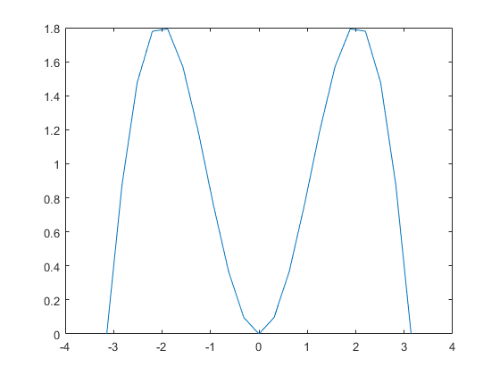 Como se ve, con pocos puntos la gráfica tiene un aspecto demasiado lineal a trozos. Para "engañar" al ojo, basta tomar más puntos. >> x=pi*(-1:0.01:1);
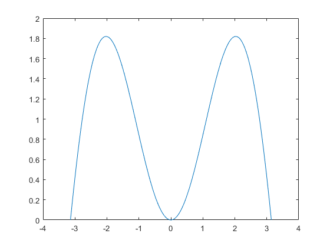 |
| También pueden dibujarse
funciones. Así:
>> fplot(f,[0
2*pi]) % Dibuja la función anónima sin(x)
(definida antes) en el intervalo [0,2*pi] 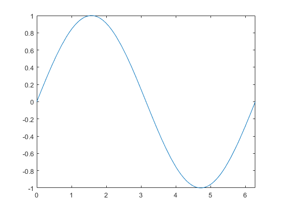 >> hold on % Mantiene en la ventana gráfica los dibujos anteriores >> fplot(g,[0 2*pi]) % Dibuja, sobre la gráfica
anterior, la función simbólica cos(x) definida anteriormente >>
legend('f(x)=sin(x)','g(x)=cos(x)') % Permite etiquetar cada una de
las funciones dibujadas. 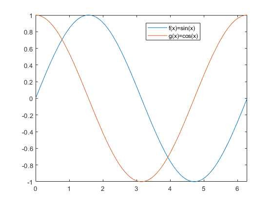 >> hold off % Con esto olvida los dibujos anteriores y dibuja en una ventana nueva >> fplot(@(x) x.^2.*sin(1./x),[-0.05
0.05]) %
Dibuja la función x^2*sin(1/x)
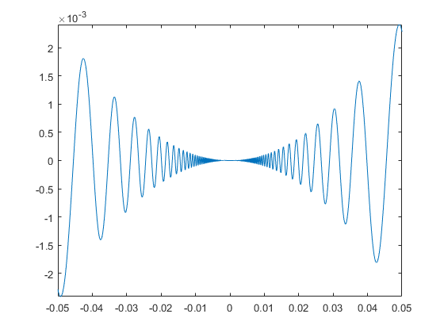 También puede usarse el versátil comando ezplot (easy-to-use plot) que permite dibujar funciones definidas mediante cadenas de caracteres, >>
ezplot('exp(x)') % Dibuja la función exponencial en
un intervalo adecuado a la función 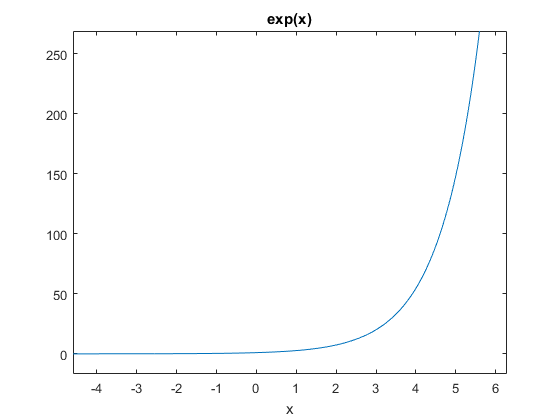
curvas en paramétricas, >>
ezplot('sin(t)','cos(t)',[0 pi])
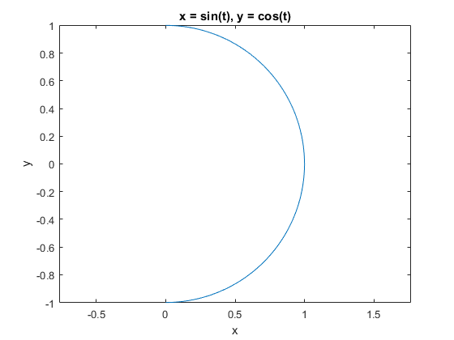 e implícitas >>
ezplot('x^2-y^2-1') 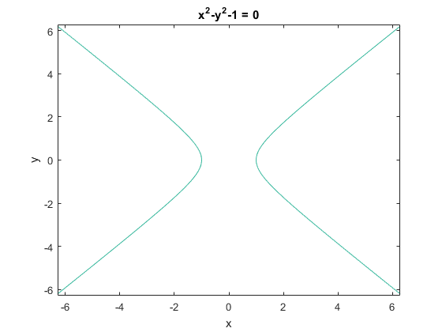
|
| Se pueden dibujar curvas en
el espacio, >>
t=0:0.01:6*pi; % Valores del parámetro >>
plot3(sin(t),cos(t),t) 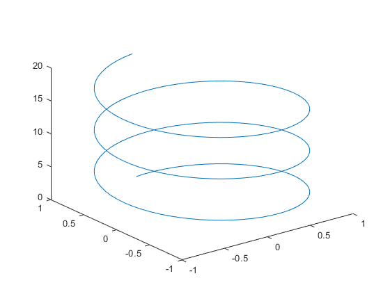 También permite dibujar superficies. La forma más sencilla es mediante el comando ezsurf, >> ezsurf('sin(x*y)',[-2 2 -2 2])
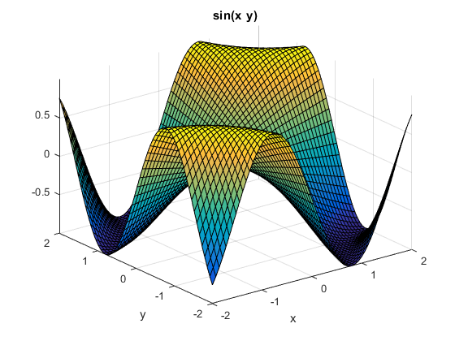
aunque se pueden realizar gráficas más sofisticadas: >> t=0:0.001:0.009;
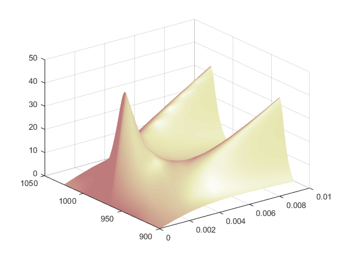 |
| Para escribir un programa
con MATLAB habrá que
crear un fichero que tenga extensión .m y
contenga las instrucciones. Esto se puede hacer con
cualquier editor de textos, pero tiene algunas ventajas
usar el editor propio de MATLAB.
MATLAB trabaja con memoria dinámica, por lo que no es necesario declarar las variables que se van a usar. Por esta misma razón, habrá que tener especial cuidado y cerciorarse de que entre las variables del espacio de trabajo no hay ninguna que se llame igual que las de nuestro programa (proveniente, por ejemplo, de un programa previamente ejecutado en la misma sesión), porque esto podría provocar conflictos. A menudo, es conveniente reservar memoria para las variables (por ejemplo, si se van a utilizar matrices muy grandes); para ello, basta con asignarles cualquier valor. Del mismo modo, si se está usando mucha memoria, puede ser conveniente liberar parte de ella borrando (clear) variables que no se vayan a usar más. Un programa escrito en MATLAB admite la mayoría de las estructuras de programación al uso y su sintaxis es bastante estándar. En los siguientes ejemplos se muestra la sintaxis de algunas de estas estructuras (if, for, while,...). |
| Ejemplo 1: Calcular
la
suma de los n primeros términos de la sucesión 1, 2x,
3x^2, 4x^3, ...
n=input('¿Cuántos términos
quieres sumar? '); |
| Ejemplo 2: Decidir si un número
natural es primo.
n=input('Número natural que
deseas saber si es primo ');
|
| Ejemplo 3: Escribir un número
natural en una base dada (menor que diez).
n=input('Dame el número que
quieres cambiar de base '); |
| Por último, también pueden
programarse funciones. La primera instrucción de un
fichero que contenga una función de nombre fun
debe ser:
function [argumentos de salida]=fun(argumentos de entrada) Es conveniente que el fichero que contenga la función se llame como ella; así, la función anterior debería guardarse en el fichero fun.m; por ejemplo, si se desea programar una función que calcule, mediante el algoritmo de Euclides, el máximo común divisor de dos números naturales, basta escribir un fichero euclides.m cuyo contenido sea:
function m=euclides(a,b)
Si, una vez escrito el fichero anterior, en el espacio de trabajo o en un programa se escribe la instrucción mcd=euclides(33,121) en la variable mcd se almacenará el valor 11. Las variables de una función son siempre locales. Por tanto, aunque en el seno de la función se modifiquen los argumentos de entrada, el valor de las variables correspondientes queda inalterado. Por ejemplo, en la función euclides.m se modifica el valor de los argumentos de entrada, pero, sin embargo: >> x=15; Si se pretende que las
modificaciones de un argumento de entrada afecten a la
variable correspondiente, deberá situarse dicho
argumento, además, en la lista de argumentos de
salida. |
|
|